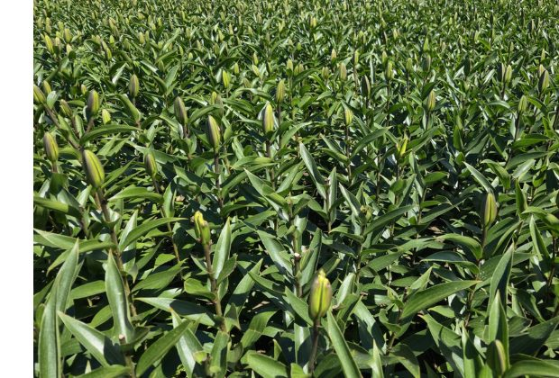
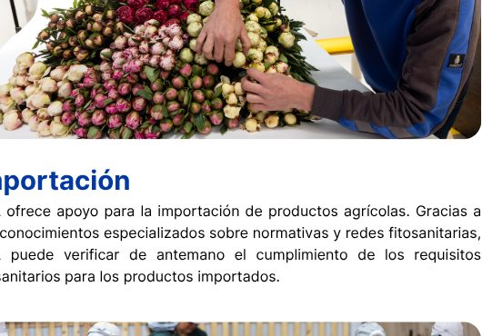
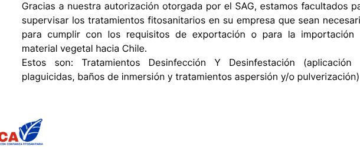
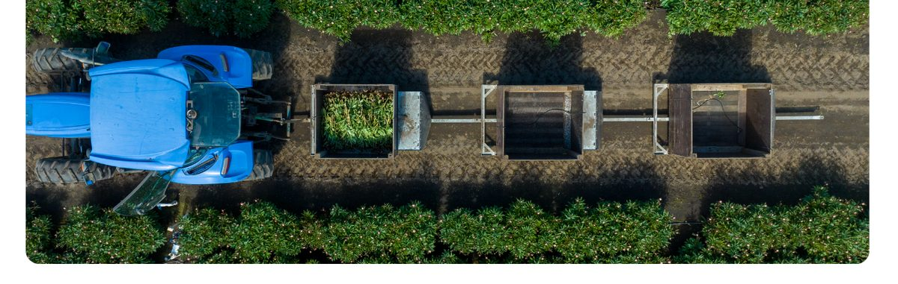
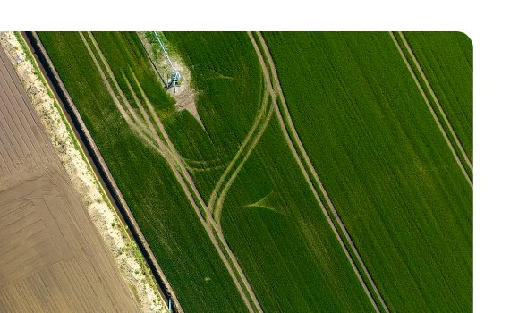

SCA participa activamente en el mantenimiento del sistema de inspección en campo para lilium, el cual tiene un impacto en la exportación de bulbos chilenos de esta especie. Gracias a los más altos estándares aplicados a los bulbos madre a nivel mundial, productores y exportadores pueden ofrecer bulbos de lilium mediante un proceso fitosanitario integral, eficiente y confiable.
Asimismo, para otros cultivos ornamentales, la SCA participa en el desarrollo de sistemas de inspección en campo y en la realización de inspecciones fitosanitarias. Cultivos tales como tulipanes, jacintos, narcisos, Hippeastrum, entre otros, comparten un mismo objetivo: alcanzar los altos estándares de calidad de los países líderes en producción a nivel mundial.

El reconocimiento de plagas y patógenos constituye un elemento clave dentro del manejo integrado de plagas. A partir de nuestra experiencia, conocimientos y trayectoria, brindamos capacitación y entrenamiento a colaboradores de empresas en la identificación de patógenos y plagas durante las actividades de monitoreo y/o selección. Asimismo, realizamos monitoreos fitosanitarios de plagas y patógenos tanto en campo como en invernaderos.
SCA ofrece apoyo para la importación de productos agrícolas. Gracias a sus conocimientos especializados sobre normativas y redes fitosanitarias, SCA puede verificar de antemano el cumplimiento de los requisitos fitosanitarios para los productos importados.

Gracias a nuestra autorización otorgada por el SAG, estamos facultados para supervisar los tratamientos fitosanitarios en su empresa que sean necesarios para cumplir con los requisitos de exportación o para la importación de material vegetal hacia Chile.
Estos son: Tratamientos Desinfección Y Desinfestación (aplicación de plaguicidas, baños de inmersión y tratamientos aspersión y/o pulverización).
En conjunto con PQS, SCA se encuentra desarrollando systems approach para plantas ornamentales y plantas frutales jóvenes, con el objetivo de apoyar al sector en la obtención de un nivel de calidad transparente y diferenciador, optimizar los procesos fitosanitarios y mitigar riesgos. Estos systems approach han sido diseñados con un enfoque universal, permitiendo su adaptación a distintos cultivos agrícolas y realidades productivas.


SCA aplica sus systems approach de manera transversal y universal, adaptándolos a distintas áreas de cultivo y especies, incluyendo otras especies de bulbos de flores, ornamentales, plantas frutales entre otros cultivos agrícolas, asegurando consistencia técnica y altos estándares de calidad.
SCA trabaja activamente para que los systems approach sean reconocidos como herramientas válidas de acceso a mercados a nivel global. Asimismo, apoya a productores, exportadores e importadores en sus interacciones con autoridades y organismos reguladores, contribuyendo a generar confianza de productos certificados.